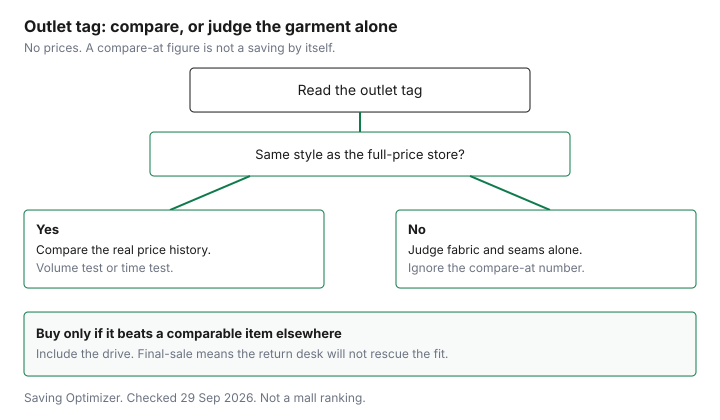

Clothing · Canada
Are Outlet Malls in Canada Worth It? Made-for-Outlet vs Real Clearance
Outlet malls in Canada are worth it only when the item is true overstock from the full-price store, not a made-for-outlet line, and the saving still holds after fuel, parking and time. An hour in the car feels justified when a tag shows a high number crossed out. The useful question is narrower. Is this the garment the full-price store sold, or a line made for the outlet? And after fuel, parking, and the time, is the difference still a saving? This page is that test. It does not rank centres, and it does not name a best store. Off-price aisles that are not outlet malls stay on the Winners, Marshalls and HomeSense guide. A wardrobe total belongs on the cost-per-wear guide.
Key takeaways
- A made-for-outlet line is a different product. True overstock is the same style the full-price store carried, then marked down.
- The Competition Bureau's ordinary-price publication, dated 16 October 2009, describes a volume test (more than 50 percent of sales) and a time test (more than 50 percent of the time). The same page says the Bureau is reviewing its guidelines after Competition Act changes.
- When there is no full-price twin, judge fibre content, seams, and the care label. The textile labelling page does not require a fabric weight.
- The drive can erase the tag. The worked trip below is an example with made-up inputs.
- The mall does not set one return window. A Gap store page for Outlet Collection Winnipeg states 30 days, and it says a Gap Factory item is not returned at Gap. Other tenants: see the store.
Made-for-outlet lines vs true overstock
Outlet stock arrives in two ways, and the tag is trying to make them look like one. True overstock is a style the full-price banner ordered, did not sell through, and moved to the outlet.
The cloth, the seams, and the style number match the regular store. The saving, if it is real, is the gap between what that banner actually charged and the outlet ticket. Made-for-outlet clothing is specified for the outlet. It can carry a similar logo and a lower price because the fabric, the stitch count, or the hardware was changed before it was sewn. The crossed-out number on that tag is not a price the full-price store charged for this garment.
You do not need a mall ranking to sort the two. Hold the outlet piece against the full-price site or the full-price store for the same style name and the same colour. If the style exists there, you are in the overstock case, and the next step is the price history. If the style does not exist there, stop using the compare-at figure as a saving. Price the outlet garment against a comparable item you would actually wear, including one from a regular sale calendar. That calendar is the best-time-to-buy guide, which does not invent a discount percent.
A separate label line is a clue, not a proof. Words such as "outlet" on the brand tab, a style number that never appears at the full-price site, or a compare-at line with no "was" price from the same seller all point to a made-for-outlet product. A hanger saying the item came from the regular store points the other way. Photograph the tag before you buy. You will want it if the return desk and the full-price site disagree about what you purchased.
How to spot the difference on tags and quality
Start with the label the law actually requires. The Competition Bureau's page "Labelling textile requirements in a nutshell," date modified 2022-01-19 and current as of 29 Sep 2026, says a dealer (the manufacturer, importer, or retailer) must label a textile product with fibre information and dealer identity, and that claims about quality, performance, or origin have to be factual.
When a fibre is 5 percent or more of the total fibre mass, the label shows the generic name and the percentage. Fibre names and other fibre information are in French and English. Dealer identity, and country of origin when it is required, need not be bilingual. Quebec has further language rules. The page points those to the Office québécois de la langue française.
A permanent label, on that page, stays attached and legible through 10 cleanings. Pants and shirts are among the items that need one. Hosiery and underwear may use a non-permanent tag. Dealer identity is the company name and mailing address, or a CA identification number. None of that is a quality grade. It is how you check that the cotton percentage you are paying for is the one on the garment. Fabric weight is a shopper's check only when the brand prints grams per square metre or ounces. The nutshell page does not require a weight. If it is absent, do not invent one from the hand-feel.
Then use your hands. Pull a side seam and a shoulder seam. Look at the hem stitch, the button attachment, and whether interfacing in a collar is bubbling. Compare two sizes of the same style if the rack is full, because a made-for-outlet run can vary inside one style. The activewear guide uses the same kind of fitting-room list for workout clothes. Care symbols decide the real cost later. If the label says dry-clean only, put that cost in the cost-per-wear figure before you call the outlet price a deal. Washing habits that stretch those wears are on the garment-care guide.
| What you can see | Leans to true overstock | Leans to made-for-outlet |
|---|---|---|
| Style match | Same style name or number at the full-price store or site | No twin. The line exists only at the outlet |
| Compare-at wording | A prior price from the same seller, or a supplier price you can test | A compare-at figure with no history you can find |
| Fabric and construction | Matches the full-price garment when you put them together | Lighter cloth, fewer stitches, or cheaper hardware on its own |
| Fibre label | Generic names and percentages, in French and English, as the textile page requires when a fibre is 5 percent or more | Missing fibre content or a claim the cloth does not support. Walk away or ask the store |
Outlet coupons, VIP clubs and tourism deals
A coupon is a second price, so read it the way you read the tag. Note who issues it: the centre, or one store.
Note what it excludes. Already-reduced racks, gift cards, and leased restaurants are common exclusions on mall offers, but this guide does not cite a current centre's percent or a VIP threshold. Check the centre's own page, and the store's page, on the day you go. A tourism brochure in a hotel lobby is an advertisement. It is not a price until the cashier applies it to your receipt.
Stacking is the usual trap. A store coupon and a centre coupon may both say they cannot be combined. A gift card you bought at a discount is an offer type. It does not raise the coupon, and it does not repair a compare-at figure. If a club card asks for an email in exchange for a percent off, the value is the percent on goods you were going to buy, not the size of the mailing list. This page does not rank clubs and does not quote a tourism rate.
Travel cost vs savings
Put the trip on the same page as the shirt. Use your own cost per kilometre for the vehicle you will drive.
This guide does not cite a national fuel rate or a CRA kilometre allowance. Add parking if the lot charges, and a meal only if you would not have eaten that meal at home. Divide the trip across the pieces that pass the quality test. A cart of maybes does not get to share the fuel.
Example with made-up inputs. A household drives a made-up 80 kilometres round trip. They use a made-up 25 cents per kilometre, which is $20, plus made-up parking of $8. The trip costs $28 before any shirt. One outlet jacket is a made-up $40 below a comparable jacket near home. The trip is ahead by $12 on that one item. Three tops at a made-up $8 under the nearby price save $24 and do not cover the $28 trip. The nearby price has to be a real alternative, not the compare-at number on the outlet tag.
| Made-up input | Figure | What it is for |
|---|---|---|
| Round trip | 80 km at 25 cents | $20 of driving. Use your own cost per kilometre |
| Parking | $8 | Skip it if your lot is free |
| One jacket under the nearby price | $40 | Trip of $28 is covered, with $12 left |
| Three tops, $8 under each | $24 | Trip of $28 is not covered |
If the outlet you are driving to is across the border, the sticker is not the landed cost. Whether a surtax applies depends on origin and on classification. Check with CBSA (1-800-461-9999) or your carrier. The walk-through of the thresholds is the US clothing orders guide. Do not treat a duties-paid badge as the whole bill until you have read that page.
| Test | What the publication says | How to use it on an outlet tag |
|---|---|---|
| Volume | More than 50 percent of sales at or above the reference price, over 12 months, or a shorter period if the product's nature calls for it | A compare-at price that almost nobody paid is a weak reference. You will not see the seller's sales file. Treat a lonely compare-at as unproven |
| Time | Offered in good faith at or above the reference price for more than 50 percent of the time, over six months, or shorter for the product | If the full-price banner has not offered that price for a substantial period, the outlet tag should not pretend it did |
| Whose price | Suppliers generally in the market, or the seller's own price when the ad says so | "Compare at" without saying whose price is the suppliers-generally case. "Our regular" is the seller's own price |
| Clearance | A clearly marked clearance can still be fair if it shows the original price, any interim prices, and the original price was offered in good faith | A true end-of-line rack should say clearance and point at a real original price. A permanent outlet price is not a clearance by itself |
Return policies at outlets
The centre's map is not a return policy. Each tenant posts its own.
The Gap store page for the Outlet Collection at 555 Sterling Lyon Parkway in Winnipeg, as of 29 Sep 2026, says Gap offers free returns and exchanges for in-store and online purchases, within 30 days of the delivery date for online orders or the purchase date in store. Final-sale items cannot be returned or exchanged by mail or in stores. In-store purchases are not returned by mail. Without a receipt, that page says a Gap Rewards phone number or the credit card used for the purchase is accepted.
The same page answers a brand question directly. A Factory or outlet item is not returned at a regular Gap, and the reverse is also no. Returns are at the brand of purchase. The examples it gives are Gap, Gap Factory, Old Navy, Athleta, Banana Republic, and Banana Republic Factory. An Old Navy store page for Bayshore in Ottawa, also as of 29 Sep 2026, uses a 30-day window of its own and says returns must be made at the same brand. That Ottawa page is a regular Old Navy, not a proof that every outlet tenant uses 30 days. See the retailer on the bag.
Final sale is the line that matters in an outlet, because the deepest racks are often marked that way. A final-sale garment that does not fit is yours. Try it on before you pay. The wider map of how Canadian change-of-mind returns work, including that they are policy rather than a general right, is the return-policy guide.

Sources
- Competition Bureau, Ordinary Price Claims, enforcement guidelines on subsections 74.01(2) and 74.01(3), publication date 16 October 2009, as of 29 Sep 2026. Volume test: more than 50 percent of sales, 12-month window unless the product calls for less. Time test: more than 50 percent of the time, six-month window unless the product calls for less. The page says the Bureau is reviewing its guidelines after Competition Act changes.
- Competition Bureau, Labelling textile requirements in a nutshell, date modified 2022-01-19, as of 29 Sep 2026. Fibre content at 5 percent or more, bilingual fibre information, dealer name and address or a CA number, permanent labels through 10 cleanings on items such as pants and shirts.
- Gap Canada store page, Outlet Collection Winnipeg, 555 Sterling Lyon Parkway, as of 29 Sep 2026. Free returns and exchanges within 30 days. Final sale excluded. Returns stay with the brand of purchase, including the Gap versus Gap Factory line.
- Old Navy Canada store page, Bayshore Shopping Centre, Ottawa, as of 29 Sep 2026. Free returns and exchanges within 30 days. Final sale excluded. Returns at the same brand. Cited here as a brand rule, not as an outlet-tenant survey.
Frequently asked questions
Are outlet mall clothes the same as regular store clothes?
Sometimes they are the same style, and sometimes they are a separate line made for the outlet. A matching style number, or the same garment you can still find at the full-price banner, is the signal of true overstock. A different name, an outlet-only label, or a compare-at price with no twin in the full-price store is a different product. Judge that second kind on fabric and seams, not on the crossed-out number.
What does 'compare at' mean at an outlet?
It is a reference price the tag invites you to treat as the ordinary price. The Competition Bureau's ordinary-price publication says a reference price is judged by a volume test or a time test: more than 50 percent of sales at or above that price, or an offer in good faith for more than 50 percent of the time. A compare-at figure that never was the price, at that seller or at suppliers generally, does not become one because it is printed. The publication is dated 16 October 2009, and the page says the guidelines are under review.
How do I check quality at an outlet?
Read the fibre label first. When a fibre is 5 percent or more of the mass, the Competition Bureau's textile page says the label shows the generic name and the percentage, in French and English. Then look at seams, hems, and the care label. Fabric weight counts only when it is printed. The labelling page does not require it. If the style also exists at full price, compare the two garments rather than trusting the outlet tag alone.
Are outlet returns different?
They follow the store, not the mall. The Gap store page for Outlet Collection Winnipeg, as of 29 Sep 2026, says free returns and exchanges within 30 days of delivery for online orders or of the purchase date in store, and that final-sale items cannot be returned by mail or in stores. That page also says a return stays with the brand of purchase, so a Gap Factory item is not returned at Gap, Old Navy, Athleta, or Banana Republic. Another tenant can have a different window. See that retailer.
When is an outlet trip worth the drive?
When the saving you can defend is larger than the trip. Add a round-trip cost you calculate yourself, parking, and any meal you would not have bought. Then subtract only the difference between this garment and a comparable one you can actually buy closer to home. A crossed-out compare-at price is not that difference. The trip table on this page is an example with made-up inputs, so replace every figure with your own before you leave.
Researched and drafted with AI assistance and fact-checked against official Canadian sources. How we create content.
Disclosure: Discounted retailer gift cards are an offer type. Saving Optimizer may earn a commission if a partner link is added later. No gift-card partnership is claimed. A gift card does not change a tag, a return window, or a points rule. Education only.